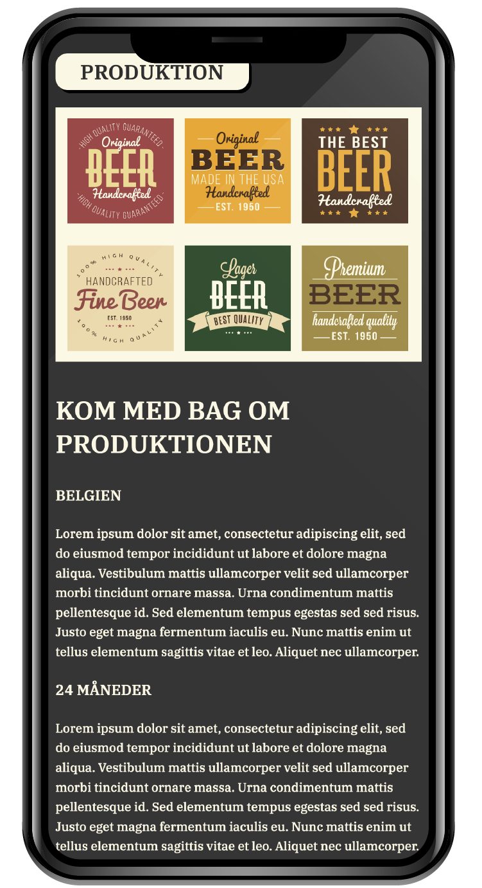
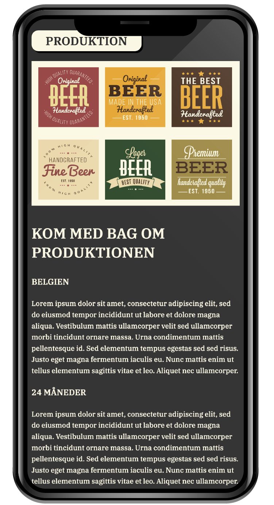
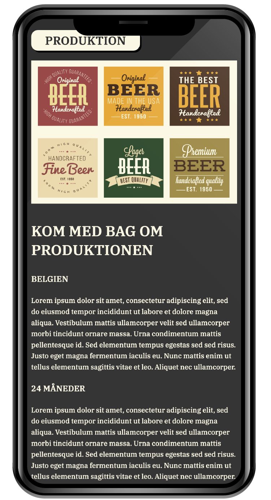
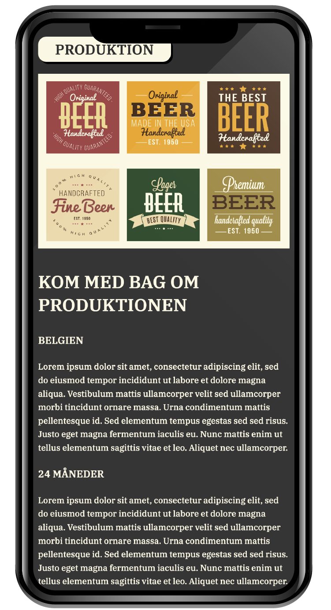

Responsive Site
Opgave: 02.04.02 responsive_site_v2 

 

Kodning/Responsivitet/Grid/Splash-billede
HTML/CSS/Photoshop/Adobe XD
Individuel
Opgaveformulering
I denne opgave skulle man lave en responsiv hjemmeside med HTML og CSS samt designe et splashbillede ud fra en tildelt stilart. Derudover skulle tidligere style-tile implementeres på siden.
Min tildelte stilart var: "Retro Hipster Style".
Krav
Følge tildelt layoutdiagram fra underviser
Følge eget style-tile tildelt stilart
Være responsiv og tilpasse sig forskellige formater
Minimum 3 passende CSS mediaqueries
Indsættelse af eget splashbillede / favicon vha. HTML og CSS
Tilpasning af navigationsmenu
Hovedfokusset i dette tema var i høj grad responsivitet, hvilket vi løbende skulle anvende og have fokus på igennem de forskellige øvelser og opgaver vi lavede. På temaet fik vi desuden også grundlæggende kendskab til to af Adobe’s programmer: Adobe XD og Photoshop. Derudover blev vi undervejs introduceret til grundlæggende faglige begreber, herunder responsivt webdesign, hvor funktioner som grid, flex og mediaqueries var en stor del af indlæringen.
Responsivitet – herunder: forklar forskellen ved de forskellige funktioner under responsivitet.
Fordele/ulemper ved responsivt design (evt. bare generelt, med eksempler) Evt perspektivering
I begyndelsen af temaet, blev vi inddelt i grupper ud fra de forskellige stilarter, som vi fik tildelt. Her var første opgave at lave moodboard- og styletile i Adobe XD ud fra den specifikke stilart. For at få kendskab til de resterende stilarter, skulle alle grupper redegøre for deres tildelte stilart foran resten af klassen.
Herefter var vi igen på egen hånd, og skulle ud fra undervisernes layoutdiagram, så småt i gang med udformningen af vores egen første rigtige hjemmeside, hvor vi skulle lave en wireframe med udgangspunkt i mobile-first, som skulle være responsivt og stadigvæk passe til vores tildelte stil.
Dernæst skulle vi i gang med de første skridt i vores kodning af hjemmesiden, hvor vi udelukkende med HTML, fik sat grundstrukturen og navigationsmenuen op, samt fik sat de relevante billeder ind. Igennem de efterfølgende dage, fik vi blandt andet kendskab til lidt grundlæggende CSS-regler og hvordan mediaqueries, grid og flex fungerer.
På baggrund af en af undervisernes styletile, skulle vi forsøge at efterligne dette, hvorefter vi skulle udforme vores personlige styletile med selvvalgte fonter og farver, og som skulle lægges op på vores hjemmeside.
Øverst på vores hjemmeside skulle der være et responsivt splash-billede, som vi ved hjælp af YouTube-tutorials, skulle designe i Photoshop.
Til slut skulle vi, ved hjælp af vores nye kendskab til diverse redskaber, implementere dette i det færdige responsive site.